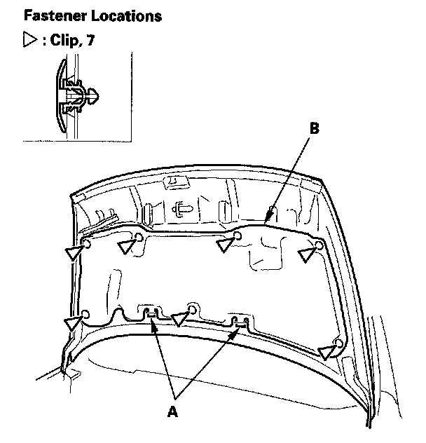

Hood Insulator / Pad: Service and Repair
Hood Insulator ReplacementFor Some Models

1. Using a clip remover, detach the clips. Release the hooks (A), then remove the hood insulator (B). Take care not to scratch the hood.
2. Install the insulator in the reverse order of removal, and note these items:
- Check if the clips are damaged or stress-whitened, and if necessary, replace them with new ones.
- Push the clips into place securely.